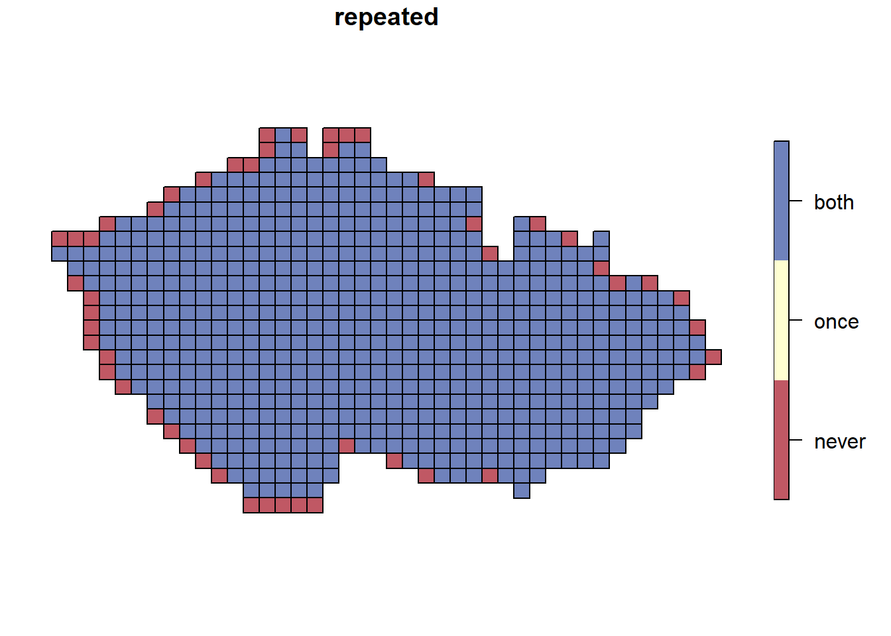
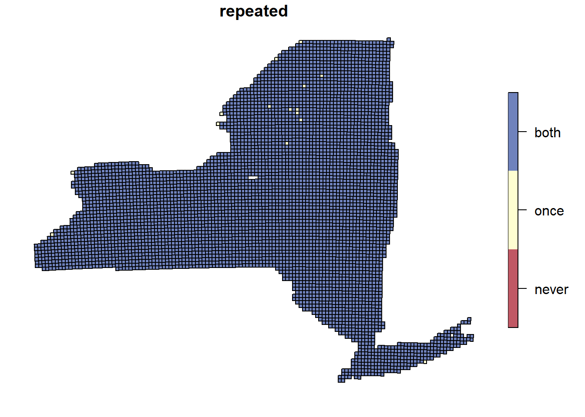

rm(list=ls())
gc() used (Mb) gc trigger (Mb) max used (Mb)
Ncells 576778 30.9 1317727 70.4 660420 35.3
Vcells 1048914 8.1 8388608 64.0 1770238 13.6rm(list=ls())
gc() used (Mb) gc trigger (Mb) max used (Mb)
Ncells 576778 30.9 1317727 70.4 660420 35.3
Vcells 1048914 8.1 8388608 64.0 1770238 13.6# Spatial:
library(sf) Linking to GEOS 3.11.2, GDAL 3.7.2, PROJ 9.3.0; sf_use_s2() is TRUEsf_use_s2(FALSE) # switch spherical geometry offSpherical geometry (s2) switched off# Data handling:
library(rstatix)
Attache Paket: 'rstatix'Das folgende Objekt ist maskiert 'package:stats':
filterlibrary(dplyr)
Attache Paket: 'dplyr'Die folgenden Objekte sind maskiert von 'package:stats':
filter, lagDie folgenden Objekte sind maskiert von 'package:base':
intersect, setdiff, setequal, unionlibrary(tidyr)
# library(plyr)
## plyr is required but produces some issues with dplyr. Thus it will be called in each function individually and is not required to load here.# Folders
source_atlas <- c("c:/Users/wolke/OneDrive - CZU v Praze/Datasets/Processed/Atlases/Replicated/")
source_predictors <- c("c:/Users/wolke/OneDrive - CZU v Praze/Dokumenty/PhD_Projects/StaticPredictors/Data/")
source_Git <- c("c:/Users/wolke/OneDrive - CZU v Praze/Dokumenty/GitHub/BEAST_General_Procedures/Project_Frieda/StaticPredictors/")
# Folder paths to atlas data
source_paths <- c(paste0(source_atlas, "Birds_Atlas_Czechia/"),
paste0(source_atlas, "Birds_Atlas_New_York/"),
paste0(source_atlas, "Birds_atlas_Japan/"),
paste0(source_atlas, "Birds_atlas_EBBA/"))
# Folder path to output folder
out_path <- c(paste0(source_Git, "out/"))
# Paths to data & grids
data_paths <- c(paste0(source_paths[1],"Birds_Atlas_Czechia_beast_data.rds"),
paste0(source_paths[2], "Birds_Atlas_New_York_beast_data.rds"),
paste0(source_paths[3], "Birds_atlas_Japan_beast_data.rds"),
paste0(source_paths[4], "2Birds_atlas_EBBA_beast_data.rds"))
grid_paths <- c(paste0(source_paths[1],"Birds_Atlas_Czechia_grid.gpkg"),
paste0(source_paths[2], "Birds_Atlas_New_York_grid.gpkg"),
paste0(source_paths[3], "Birds_atlas_Japan_grid.gpkg"),
paste0(source_paths[4], "Birds_atlas_EBBA_grid.gpkg"))# Vectors for loops:
atlas_names <- c("Birds_Atlas_Czechia", "Birds_Atlas_New_York","Birds_atlas_Japan", "Birds_atlas_EBBA")
time_periods <- c(1,2)
# Define the desired order of factor levels
desired_levels <- factor(c("1", "2","4", "8", "16", "32", "64", "128"), ordered = T,
levels = c("1", "2","4", "8", "16", "32", "64", "128"))
# list of crs in order of atlas_names
crs_list <- list( "EPSG:5514", # CZ
"EPSG:32118", # NY
"EPSG:6668", # JP
"EPSG:3035") # EU
names(crs_list) <- c("CZ", "NY", "JP", "EU")# Species data =====================
presence_data <- list()
for (i in seq_along(data_paths)){
pres_dat <- readRDS(data_paths[i])
sy <- sort(unique(pres_dat$start_year))
pres_dat2 <- pres_dat %>%
ungroup() %>%
# Add time-period column
mutate(tp = case_when(start_year == sy[1] ~ 1,
start_year == sy[2] ~ 2)) %>%
filter(tp %in% c(1,2)) %>%
# Reorder spatial scales from small to large
reorder_levels(cell_grouping, order=desired_levels) %>%
select(dataset, tp, cell_grouping,
cell_label, cell_lat, cell_long, area,
verbatim_name)
presence_data[[i]] <- pres_dat2
}
# Merge list of atlases together
presence_data2 <- plyr::rbind.fill(presence_data, fill=T) %>%
distinct(dataset, tp, verbatim_name, cell_grouping, cell_label, .keep_all = T)# ========================== Data checks ======================================= #
colSums(is.na(presence_data2)) dataset tp cell_grouping cell_label cell_lat
0 0 0 0 0
cell_long area verbatim_name
0 0 0 # Summary sp and site numbers: Before reduction
presence_data2 %>%
filter(cell_grouping == 1) %>%
group_by(dataset, tp) %>%
summarise(n_sp = n_distinct(verbatim_name),
n_sites = n_distinct(cell_label))`summarise()` has grouped output by 'dataset'. You can override using the
`.groups` argument.# A tibble: 8 × 4
# Groups: dataset [4]
dataset tp n_sp n_sites
<chr> <dbl> <int> <int>
1 Birds_Atlas_Czechia 1 206 628
2 Birds_Atlas_Czechia 2 213 628
3 Birds_Atlas_New_York 1 242 5323
4 Birds_Atlas_New_York 2 248 5332
5 Birds_atlas_EBBA 1 511 3909
6 Birds_atlas_EBBA 2 617 5041
7 Birds_atlas_Japan 1 221 1095
8 Birds_atlas_Japan 2 227 1098presence_data2 %>%
ungroup() %>%
summarise(n_sp = n_distinct(verbatim_name)) # 989 sp in total (before reduction) n_sp
1 989# ==================== Save output & clean up environment ===================== #
# saveRDS(presence_data2, paste0(out_path, "rds/presence_data_raw.rds"))
rm(pres_dat, sy, pres_dat2)
# ============================================================================= ### Filter level 1: Cells sampled twice
common_cells <- presence_data2 %>%
ungroup() %>%
distinct(dataset, cell_grouping, cell_label, tp) %>% ungroup() %>%
group_by(dataset, cell_grouping, cell_label) %>%
# How often each cell was sampled:
mutate(num_periods_cells = n_distinct(tp)) %>%
# Dummy variable for easy filtering of cells that were sampled repeatedly
mutate(repeated = case_when(
num_periods_cells == 2 ~ 1,
num_periods_cells %in% c(1,2) ~ 0)) %>%
ungroup() %>%
group_by(dataset) %>%
select(dataset, cell_grouping, cell_label, num_periods_cells, repeated) %>%
distinct()
presence_data_rep <- full_join(presence_data2, common_cells)Joining with `by = join_by(dataset, cell_grouping, cell_label)`excluded_cells <- common_cells %>%
filter(num_periods_cells == 1) %>%
distinct(dataset, cell_grouping, cell_label)# ========================== Data checks ======================================= #
common_cells %>%
filter(num_periods_cells == 2 & cell_grouping == 1) %>%
group_by(dataset, cell_grouping) %>%
summarise(n = n_distinct(cell_label))`summarise()` has grouped output by 'dataset'. You can override using the
`.groups` argument.# A tibble: 4 × 3
# Groups: dataset [4]
dataset cell_grouping n
<chr> <fct> <int>
1 Birds_Atlas_Czechia 1 628
2 Birds_Atlas_New_York 1 5320
3 Birds_atlas_EBBA 1 3792
4 Birds_atlas_Japan 1 1095table(excluded_cells$dataset) # EBBA: 66 (1706?), JP: 3, NY = 20
Birds_atlas_EBBA Birds_atlas_Japan Birds_Atlas_New_York
1706 3 20 # ============================================================================= ### Filter level 2: Species sampled twice in the remaining cells
common_sp <- presence_data_rep %>% filter(repeated == 1 & cell_grouping == 1) %>%
group_by(dataset, verbatim_name) %>%
summarise(num_periods_sp = n_distinct(tp)) %>%
ungroup() %>% group_by(dataset, num_periods_sp)`summarise()` has grouped output by 'dataset'. You can override using the
`.groups` argument.excluded_sp <- common_sp %>%
filter(num_periods_sp == 1) %>%
distinct(dataset, verbatim_name)# ========================== Data checks ======================================= #
common_sp %>%
filter(num_periods_sp == 2) %>%
group_by(dataset) %>%
summarise(n = n_distinct(verbatim_name))# A tibble: 4 × 2
dataset n
<chr> <int>
1 Birds_Atlas_Czechia 200
2 Birds_Atlas_New_York 237
3 Birds_atlas_EBBA 503
4 Birds_atlas_Japan 208table(excluded_sp$dataset)
Birds_Atlas_Czechia Birds_atlas_EBBA Birds_atlas_Japan
19 94 32
Birds_Atlas_New_York
16 excluded_sp %>% write.csv("../../Documents/documentation_methods/ExcludedSpecies.csv") # CZ: 19, EBBA = 14 (94?), JP = 32, NY = 16
# ============================================================================= ## Add Diversity Metris to data:
presence_data_filt <- full_join(presence_data_rep, common_sp) %>%
filter(num_periods_cells == 2 & num_periods_sp == 2 & repeated == 1) %>%
select(-num_periods_cells, -num_periods_sp, -repeated)Joining with `by = join_by(dataset, verbatim_name)`# Subset with only repeated cells
presence_data_filt2 <- presence_data_filt %>%
group_by(dataset, tp, cell_grouping) %>% # Gamma is per atlas
mutate(Gamma = n_distinct(verbatim_name)) %>%
ungroup() %>%
# Alpha and Beta are per cell
group_by(dataset, tp, cell_grouping, cell_label) %>%
mutate(Alpha = mean(n_distinct(verbatim_name))) %>%
mutate(Beta = Gamma / Alpha) %>%
ungroup() %>%
# Mean Beta and Mean Alpha are per atlas
group_by(dataset, tp, cell_grouping) %>%
mutate(Mean_Alpha = mean(Alpha),
Mean_Beta = Gamma / Mean_Alpha) %>%
ungroup()# ========================== Data checks ======================================= #
presence_data_filt %>%
filter(cell_grouping == 1) %>%
group_by(dataset, tp) %>%
rstatix::get_summary_stats(type = "robust")# A tibble: 32 × 6
dataset tp variable n median iqr
<chr> <dbl> <fct> <dbl> <dbl> <dbl>
1 Birds_Atlas_Czechia 1 cell_label 65362 351 324
2 Birds_Atlas_Czechia 1 cell_lat 65362 49.8 0.9
3 Birds_Atlas_Czechia 1 cell_long 65362 15.2 2.5
4 Birds_Atlas_Czechia 1 area 65362 134. 2.45
5 Birds_Atlas_Czechia 2 cell_label 68508 353 330
6 Birds_Atlas_Czechia 2 cell_lat 68508 49.8 0.9
7 Birds_Atlas_Czechia 2 cell_long 68508 15.2 2.5
8 Birds_Atlas_Czechia 2 area 68508 134. 2.45
9 Birds_Atlas_New_York 1 cell_label 361308 2575 2621.
10 Birds_Atlas_New_York 1 cell_lat 361308 42.8 1.24
# ℹ 22 more rowspresence_data_filt %>%
filter(cell_grouping == 1) %>%
group_by(dataset, tp) %>%
summarize(
n_sp = n_distinct(verbatim_name),
n_cells = n_distinct(cell_label))`summarise()` has grouped output by 'dataset'. You can override using the
`.groups` argument.# A tibble: 8 × 4
# Groups: dataset [4]
dataset tp n_sp n_cells
<chr> <dbl> <int> <int>
1 Birds_Atlas_Czechia 1 200 628
2 Birds_Atlas_Czechia 2 200 628
3 Birds_Atlas_New_York 1 237 5320
4 Birds_Atlas_New_York 2 237 5320
5 Birds_atlas_EBBA 1 503 3791
6 Birds_atlas_EBBA 2 503 3792
7 Birds_atlas_Japan 1 208 1095
8 Birds_atlas_Japan 2 208 1095presence_data_filt %>% distinct(verbatim_name) # 841 species verbatim_name
1 Accipiter gentilis
2 Accipiter nisus
3 Acrocephalus arundinaceus
4 Acrocephalus palustris
5 Acrocephalus schoenobaenus
6 Acrocephalus scirpaceus
7 Actitis hypoleucos
8 Aegithalos caudatus
9 Aegolius funereus
10 Alauda arvensis
11 Alcedo atthis
12 Anas acuta
13 Anas clypeata
14 Anas crecca
15 Anas platyrhynchos
16 Anas querquedula
17 Anas strepera
18 Anser anser
19 Anthus campestris
20 Anthus pratensis
21 Anthus spinoletta
22 Anthus trivialis
23 Apus apus
24 Aquila pomarina
25 Ardea cinerea
26 Ardea purpurea
27 Asio flammeus
28 Asio otus
29 Athene noctua
30 Aythya ferina
31 Aythya fuligula
32 Aythya nyroca
33 Bonasa bonasia
34 Botaurus stellaris
35 Bubo bubo
36 Bucephala clangula
37 Buteo buteo
38 Caprimulgus europaeus
39 Carduelis cannabina
40 Carduelis carduelis
41 Carduelis chloris
42 Carduelis flammea
43 Carduelis spinus
44 Carpodacus erythrinus
45 Certhia brachydactyla
46 Certhia familiaris
47 Charadrius dubius
48 Charadrius morinellus
49 Chlidonias niger
50 Ciconia ciconia
51 Ciconia nigra
52 Cinclus cinclus
53 Circus aeruginosus
54 Circus cyaneus
55 Circus pygargus
56 Coccothraustes coccothraustes
57 Columba livia
58 Columba oenas
59 Columba palumbus
60 Corvus corax
61 Corvus corone
62 Corvus frugilegus
63 Corvus monedula
64 Coturnix coturnix
65 Crex crex
66 Cuculus canorus
67 Cygnus olor
68 Delichon urbica
69 Dendrocopos leucotos
70 Dendrocopos major
71 Dendrocopos medius
72 Dendrocopos minor
73 Dendrocopos syriacus
74 Dryocopus martius
75 Egretta garzetta
76 Emberiza citrinella
77 Emberiza hortulana
78 Emberiza schoeniclus
79 Erithacus rubecula
80 Falco cherrug
81 Falco peregrinus
82 Falco subbuteo
83 Falco tinnunculus
84 Ficedula albicollis
85 Ficedula hypoleuca
86 Ficedula parva
87 Fringilla coelebs
88 Fulica atra
89 Galerida cristata
90 Gallinago gallinago
91 Gallinula chloropus
92 Garrulus glandarius
93 Glaucidium passerinum
94 Grus grus
95 Haliaeetus albicilla
96 Himantopus himantopus
97 Hippolais icterina
98 Hirundo rustica
99 Ixobrychus minutus
100 Jynx torquilla
101 Lanius collurio
102 Lanius excubitor
103 Larus cachinnans
104 Larus canus
105 Larus melanocephalus
106 Larus ridibundus
107 Limosa limosa
108 Locustella fluviatilis
109 Locustella luscinioides
110 Locustella naevia
111 Loxia curvirostra
112 Lullula arborea
113 Luscinia luscinia
114 Luscinia megarhynchos
115 Luscinia svecica
116 Mergus merganser
117 Merops apiaster
118 Miliaria calandra
119 Milvus migrans
120 Milvus milvus
121 Motacilla alba
122 Motacilla cinerea
123 Motacilla flava
124 Muscicapa striata
125 Netta rufina
126 Nucifraga caryocatactes
127 Numenius arquata
128 Nycticorax nycticorax
129 Oenanthe oenanthe
130 Oriolus oriolus
131 Otus scops
132 Panurus biarmicus
133 Parus ater
134 Parus caeruleus
135 Parus cristatus
136 Parus major
137 Parus montanus
138 Parus palustris
139 Passer domesticus
140 Passer montanus
141 Perdix perdix
142 Pernis apivorus
143 Phalacrocorax carbo
144 Phasianus colchicus
145 Phoenicurus ochruros
146 Phoenicurus phoenicurus
147 Phylloscopus collybita
148 Phylloscopus sibilatrix
149 Phylloscopus trochiloides
150 Phylloscopus trochilus
151 Pica pica
152 Picoides tridactylus
153 Picus canus
154 Picus viridis
155 Platalea leucorodia
156 Podiceps cristatus
157 Podiceps grisegena
158 Podiceps nigricollis
159 Porzana parva
160 Porzana porzana
161 Prunella collaris
162 Prunella modularis
163 Pyrrhula pyrrhula
164 Rallus aquaticus
165 Recurvirostra avosetta
166 Regulus ignicapillus
167 Regulus regulus
168 Remiz pendulinus
169 Riparia riparia
170 Saxicola rubetra
171 Saxicola torquata
172 Scolopax rusticola
173 Serinus serinus
174 Sitta europaea
175 Sterna hirundo
176 Streptopelia decaocto
177 Streptopelia turtur
178 Strix aluco
179 Strix uralensis
180 Sturnus vulgaris
181 Sylvia atricapilla
182 Sylvia borin
183 Sylvia communis
184 Sylvia curruca
185 Sylvia nisoria
186 Tachybaptus ruficollis
187 Tetrao tetrix
188 Tetrao urogallus
189 Tringa ochropus
190 Tringa totanus
191 Troglodytes troglodytes
192 Turdus iliacus
193 Turdus merula
194 Turdus philomelos
195 Turdus pilaris
196 Turdus torquatus
197 Turdus viscivorus
198 Tyto alba
199 Upupa epops
200 Vanellus vanellus
201 Accipiter cooperii
202 Accipiter striatus
203 Actitis macularius
204 Aegolius acadicus
205 Agelaius phoeniceus
206 Aix sponsa
207 Ammodramus caudacutus
208 Ammodramus henslowii
209 Ammodramus maritimus
210 Ammodramus savannarum
211 Anas americana
212 Anas discors
213 Anas rubripes
214 Aquila chrysaetos
215 Archilochus colubris
216 Ardea alba
217 Ardea herodias
218 Aythya affinis
219 Aythya americana
220 Aythya collaris
221 Aythya valisineria
222 Baeolophus bicolor
223 Bartramia longicauda
224 Bombycilla cedrorum
225 Bonasa umbellus
226 Botaurus lentiginosus
227 Branta canadensis
228 Bubo virginianus
229 Bubulcus ibis
230 Buteo jamaicensis
231 Buteo lineatus
232 Buteo platypterus
233 Butorides virescens
234 Caprimulgus carolinensis
235 Caprimulgus vociferus
236 Cardinalis cardinalis
237 Carpodacus mexicanus
238 Carpodacus purpureus
239 Cathartes aura
240 Catharus bicknelli
241 Catharus fuscescens
242 Catharus guttatus
243 Catharus ustulatus
244 Certhia americana
245 Chaetura pelagica
246 Charadrius melodus
247 Charadrius vociferus
248 Chordeiles minor
249 Cistothorus palustris
250 Cistothorus platensis
251 Coccothraustes vespertinus
252 Coccyzus americanus
253 Coccyzus erythropthalmus
254 Colaptes auratus
255 Colinus virginianus
256 Contopus cooperi
257 Contopus virens
258 Corvus brachyrhynchos
259 Corvus ossifragus
260 Cyanocitta cristata
261 Dendroica caerulescens
262 Dendroica castanea
263 Dendroica cerulea
264 Dendroica coronata
265 Dendroica discolor
266 Dendroica dominica
267 Dendroica fusca
268 Dendroica magnolia
269 Dendroica palmarum
270 Dendroica pensylvanica
271 Dendroica petechia
272 Dendroica pinus
273 Dendroica striata
274 Dendroica tigrina
275 Dendroica virens
276 Dolichonyx oryzivorus
277 Dryocopus pileatus
278 Dumetella carolinensis
279 Egretta caerulea
280 Egretta thula
281 Egretta tricolor
282 Empidonax alnorum
283 Empidonax flaviventris
284 Empidonax minimus
285 Empidonax traillii
286 Empidonax virescens
287 Eremophila alpestris
288 Euphagus carolinus
289 Falcipennis canadensis
290 Falco sparverius
291 Fulica americana
292 Gallinago delicata
293 Gavia immer
294 Gelochelidon nilotica
295 Geothlypis trichas
296 Haematopus palliatus
297 Haliaeetus leucocephalus
298 Helmitheros vermivorum
299 Hydropogne caspia
300 Hylocichla mustelina
301 Icteria virens
302 Icterus galbula
303 Icterus spurius
304 Ixobrychus exilis
305 Junco hyemalis
306 Lanius ludovicianus
307 Larus argentatus
308 Larus delawarensis
309 Larus marinus
310 Laterallus jamaicensis
311 Leucophaeus atricilla
312 Lophodytes cucullatus
313 Loxia leucoptera
314 Megaceryle alcyon
315 Megascops asio
316 Melanerpes carolinus
317 Melanerpes erythrocephalus
318 Meleagris gallopavo
319 Melospiza georgiana
320 Melospiza lincolnii
321 Melospiza melodia
322 Mergus serrator
323 Mimus polyglottos
324 Mniotilta varia
325 Molothrus ater
326 Myiarchus crinitus
327 Myiopsitta monachus
328 Nyctanassa violacea
329 Oporornis formosus
330 Oporornis philadelphia
331 Oxyura jamaicensis
332 Pandion haliaetus
333 Parula americana
334 Passerculus sandwichensis
335 Passerina caerulea
336 Passerina cyanea
337 Perisoreus canadensis
338 Petrochelidon pyrrhonota
339 Phalacrocorax auritus
340 Pheucticus ludovicianus
341 Picoides arcticus
342 Picoides dorsalis
343 Picoides pubescens
344 Picoides villosus
345 Pipilo erythrophthalmus
346 Piranga olivacea
347 Piranga rubra
348 Plegadis falcinellus
349 Podilymbus podiceps
350 Poecile atricapillus
351 Poecile hudsonicus
352 Polioptila caerulea
353 Pooecetes gramineus
354 Porzana carolina
355 Progne subis
356 Protonotaria citrea
357 Quiscalus major
358 Quiscalus quiscula
359 Rallus elegans
360 Rallus limicola
361 Rallus longirostris
362 Regulus calendula
363 Regulus satrapa
364 Rynchops niger
365 Sayornis phoebe
366 Scolopax minor
367 Seiurus aurocapilla
368 Seiurus motacilla
369 Seiurus noveboracensis
370 Setophaga ruticilla
371 Sialia sialis
372 Sitta canadensis
373 Sitta carolinensis
374 Sphyrapicus varius
375 Spinus pinus
376 Spinus tristis
377 Spiza americana
378 Spizella pallida
379 Spizella passerina
380 Spizella pusilla
381 Stelgidopteryx serripennis
382 Sterna dougallii
383 Sterna forsteri
384 Sternula antillarum
385 Strix varia
386 Sturnella magna
387 Sturnella neglecta
388 Tachycineta bicolor
389 Thryothorus ludovicianus
390 Toxostoma rufum
391 Tringa semipalmata
392 Troglodytes aedon
393 Turdus migratorius
394 Tyrannus tyrannus
395 Vermivora chrysoptera
396 Vermivora peregrina
397 Vermivora pinus
398 Vermivora ruficapilla
399 Vireo flavifrons
400 Vireo gilvus
401 Vireo griseus
402 Vireo olivaceus
403 Vireo philadelphicus
404 Vireo solitarius
405 Wilsonia canadensis
406 Wilsonia citrina
407 Wilsonia pusilla
408 Zenaida macroura
409 Zonotrichia albicollis
410 Accipiter gularis
411 Acrocephalus bistrigiceps
412 Acrocephalus orientalis
413 Agropsar philippensis
414 Aix galericulata
415 Amaurornis phoenicurus
416 Anas falcata
417 Anas zonorhyncha
418 Anous stolidus
419 Anthus hodgsoni
420 Apalopteron familiare
421 Apus nipalensis
422 Apus pacificus
423 Bambusicola thoracicus
424 Butastur indicus
425 Butorides striata
426 Calonectris leucomelas
427 Caprimulgus indicus
428 Cepphus carbo
429 Cerorhinca monocerata
430 Cettia diphone
431 Chalcophaps indica
432 Charadrius alexandrinus
433 Charadrius placidus
434 Chloris sinica
435 Cinclus pallasii
436 Circus spilonotus
437 Cisticola juncidis
438 Columba janthina
439 Corvus macrorhynchos
440 Cuculus micropterus
441 Cuculus optatus
442 Cuculus poliocephalus
443 Cyanopica cyanus
444 Cyanoptila cyanomelana
445 Delichon dasypus
446 Dendrocopos kizuki
447 Egretta intermedia
448 Egretta sacra
449 Emberiza cioides
450 Emberiza fucata
451 Emberiza spodocephala
452 Emberiza sulphurata
453 Emberiza variabilis
454 Emberiza yessoensis
455 Eophona personata
456 Eurystomus orientalis
457 Ficedula narcissina
458 Gallinago hardwickii
459 Gallirallus okinawae
460 Garrulax canorus
461 Garrulus lidthi
462 Glareola maldivarum
463 Gorsachius goisagi
464 Grus japonensis
465 Halcyon coromanda
466 Hierococcyx hyperythrus
467 Hirundapus caudacutus
468 Hirundo daurica
469 Hirundo tahitica
470 Histrionicus histrionicus
471 Hypsipetes amaurotis
472 Ixobrychus cinnamomeus
473 Ixobrychus sinensis
474 Lagopus muta
475 Lanius bucephalus
476 Lanius cristatus
477 Lanius tigrinus
478 Larus crassirostris
479 Larus schistisagus
480 Leiothrix lutea
481 Locustella fasciolata
482 Locustella lanceolata
483 Locustella ochotensis
484 Locustella pleskei
485 Locustella pryeri
486 Lonchura punctulata
487 Luscinia akahige
488 Luscinia calliope
489 Luscinia cyane
490 Luscinia komadori
491 Megaceryle lugubris
492 Monticola solitarius
493 Motacilla grandis
494 Muscicapa dauurica
495 Muscicapa sibirica
496 Ninox scutulata
497 Nisaetus nipalensis
498 Otus elegans
499 Otus lempiji
500 Otus sunia
501 Parus minor
502 Passer rutilans
503 Pericrocotus divaricatus
504 Periparus ater
505 Pernis ptilorhynchus
506 Phalacrocorax capillatus
507 Phalacrocorax pelagicus
508 Phoenicurus auroreus
509 Phylloscopus borealoides
510 Phylloscopus coronatus
511 Phylloscopus ijimae
512 Phylloscopus xanthodryas
513 Picus awokera
514 Pinicola enucleator
515 Pitta nympha
516 Poecile montanus
517 Poecile palustris
518 Poecile varius
519 Porzana fusca
520 Prunella rubida
521 Pycnonotus sinensis
522 Rallina eurizonoides
523 Rostratula benghalensis
524 Sapheopipo noguchii
525 Saxicola torquatus
526 Spilornis cheela
527 Spodiopsar cineraceus
528 Sterna albifrons
529 Sterna sumatrana
530 Streptopelia orientalis
531 Sula leucogaster
532 Syrmaticus soemmerringii
533 Tarsiger cyanurus
534 Terpsiphone atrocaudata
535 Tetrastes bonasia
536 Treron formosae
537 Treron sieboldii
538 Turdus cardis
539 Turdus celaenops
540 Turdus chrysolaus
541 Turdus pallidus
542 Turnix suscitator
543 Uragus sibiricus
544 Urosphena squameiceps
545 Vanellus cinereus
546 Zoothera dauma
547 Zoothera sibirica
548 Zosterops japonicus
549 Acanthis flammea
550 Accipiter brevipes
551 Acridotheres cristatellus
552 Acrocephalus agricola
553 Acrocephalus dumetorum
554 Acrocephalus melanopogon
555 Acrocephalus paludicola
556 Aegypius monachus
557 Alauda leucoptera
558 Alaudala rufescens
559 Alca torda
560 Alectoris barbara
561 Alectoris chukar
562 Alectoris graeca
563 Alectoris rufa
564 Alle alle
565 Alopochen aegyptiaca
566 Amandava amandava
567 Anser albifrons
568 Anser brachyrhynchus
569 Anser erythropus
570 Anser fabalis
571 Anthropoides virgo
572 Anthus berthelotii
573 Anthus cervinus
574 Anthus petrosus
575 Apus caffer
576 Apus pallidus
577 Apus unicolor
578 Aquila adalberti
579 Aquila fasciata
580 Aquila heliaca
581 Aquila nipalensis
582 Ardeola ralloides
583 Arenaria interpres
584 Aythya marila
585 Bombycilla garrulus
586 Branta bernicla
587 Branta leucopsis
588 Bubo scandiacus
589 Bucanetes githagineus
590 Bucanetes mongolicus
591 Bucephala islandica
592 Bulweria bulwerii
593 Burhinus oedicnemus
594 Buteo lagopus
595 Buteo rufinus
596 Calandrella brachydactyla
597 Calcarius lapponicus
598 Calidris alba
599 Calidris alpina
600 Calidris canutus
601 Calidris falcinellus
602 Calidris maritima
603 Calidris melanotos
604 Calidris minuta
605 Calidris pugnax
606 Calidris temminckii
607 Calliope calliope
608 Callipepla californica
609 Calonectris borealis
610 Calonectris diomedea
611 Caprimulgus ruficollis
612 Carduelis citrinella
613 Carduelis corsicana
614 Carpodacus rubicilla
615 Catharacta skua
616 Cecropis daurica
617 Cepphus grylle
618 Cercotrichas galactotes
619 Cettia cetti
620 Charadrius asiaticus
621 Charadrius hiaticula
622 Charadrius leschenaultii
623 Chersophilus duponti
624 Chlidonias hybrida
625 Chlidonias leucopterus
626 Chloris chloris
627 Chrysolophus amherstiae
628 Chrysolophus pictus
629 Circaetus gallicus
630 Circus macrourus
631 Clamator glandarius
632 Clanga clanga
633 Clanga pomarina
634 Clangula hyemalis
635 Columba trocaz
636 Coracias garrulus
637 Cuculus saturatus
638 Cyanecula svecica
639 Cyanistes caeruleus
640 Cyanistes cyanus
641 Cyanistes teneriffae
642 Cyanopica cooki
643 Cygnus columbianus
644 Cygnus cygnus
645 Delichon urbicum
646 Dryobates minor
647 Elanus caeruleus
648 Emberiza aureola
649 Emberiza bruniceps
650 Emberiza caesia
651 Emberiza calandra
652 Emberiza cia
653 Emberiza cineracea
654 Emberiza cirlus
655 Emberiza melanocephala
656 Emberiza pallasi
657 Emberiza pusilla
658 Emberiza rustica
659 Estrilda astrild
660 Estrilda melpoda
661 Eudromias morinellus
662 Falco biarmicus
663 Falco columbarius
664 Falco eleonorae
665 Falco naumanni
666 Falco rusticolus
667 Falco vespertinus
668 Ficedula semitorquata
669 Francolinus francolinus
670 Fratercula arctica
671 Fringilla montifringilla
672 Fulica cristata
673 Fulmarus glacialis
674 Galerida theklae
675 Gallinago media
676 Gallinago stenura
677 Gavia arctica
678 Gavia stellata
679 Glareola nordmanni
680 Glareola pratincola
681 Gulosus aristotelis
682 Gypaetus barbatus
683 Gyps fulvus
684 Haematopus ostralegus
685 Hieraaetus pennatus
686 Hippolais olivetorum
687 Hippolais polyglotta
688 Hydrobates castro
689 Hydrobates leucorhous
690 Hydrobates pelagicus
691 Hydrocoloeus minutus
692 Hydroprogne caspia
693 Iduna caligata
694 Iduna opaca
695 Iduna pallida
696 Lagopus lagopus
697 Lanius meridionalis
698 Lanius minor
699 Lanius nubicus
700 Lanius senator
701 Larus armenicus
702 Larus audouinii
703 Larus fuscus
704 Larus genei
705 Larus hyperboreus
706 Larus ichthyaetus
707 Larus michahellis
708 Leiopicus medius
709 Limosa lapponica
710 Linaria cannabina
711 Linaria flavirostris
712 Lophophanes cristatus
713 Loxia pytyopsittacus
714 Loxia scotica
715 Lymnocryptes minimus
716 Lyrurus mlokosiewiczi
717 Lyrurus tetrix
718 Mareca penelope
719 Mareca strepera
720 Marmaronetta angustirostris
721 Melanitta fusca
722 Melanitta nigra
723 Melanocorypha calandra
724 Mergellus albellus
725 Merops persicus
726 Microcarbo pygmaeus
727 Monticola saxatilis
728 Montifringilla nivalis
729 Morus bassanus
730 Motacilla citreola
731 Neophron percnopterus
732 Numenius phaeopus
733 Oenanthe deserti
734 Oenanthe finschii
735 Oenanthe hispanica
736 Oenanthe isabellina
737 Oenanthe leucura
738 Oenanthe pleschanka
739 Onychoprion fuscatus
740 Otis tarda
741 Oxyura leucocephala
742 Pagophila eburnea
743 Passer hispaniolensis
744 Passer italiae
745 Pastor roseus
746 Pelagodroma marina
747 Pelecanus crispus
748 Pelecanus onocrotalus
749 Perisoreus infaustus
750 Petronia petronia
751 Phalaropus fulicarius
752 Phalaropus lobatus
753 Phoenicopterus roseus
754 Phylloscopus bonelli
755 Phylloscopus borealis
756 Phylloscopus ibericus
757 Phylloscopus inornatus
758 Phylloscopus nitidus
759 Phylloscopus orientalis
760 Phylloscopus sindianus
761 Picus sharpei
762 Plectrophenax nivalis
763 Pluvialis apricaria
764 Pluvialis squatarola
765 Podiceps auritus
766 Poecile cinctus
767 Poecile lugubris
768 Polysticta stelleri
769 Porphyrio porphyrio
770 Prunella atrogularis
771 Prunella montanella
772 Psittacula krameri
773 Pterocles alchata
774 Pterocles orientalis
775 Pterodroma deserta
776 Pterodroma madeira
777 Ptyonoprogne rupestris
778 Puffinus lherminieri
779 Puffinus mauretanicus
780 Puffinus puffinus
781 Puffinus yelkouan
782 Pyrrhocorax graculus
783 Pyrrhocorax pyrrhocorax
784 Pyrrhula murina
785 Regulus ignicapilla
786 Regulus madeirensis
787 Rissa tridactyla
788 Serinus canaria
789 Serinus pusillus
790 Sitta krueperi
791 Sitta neumayer
792 Sitta whiteheadi
793 Somateria mollissima
794 Somateria spectabilis
795 Spatula clypeata
796 Spatula querquedula
797 Spilopelia senegalensis
798 Spinus spinus
799 Stercorarius longicaudus
800 Stercorarius parasiticus
801 Stercorarius pomarinus
802 Sterna paradisaea
803 Sternula albifrons
804 Strix nebulosa
805 Sturnus unicolor
806 Surnia ulula
807 Sylvia balearica
808 Sylvia cantillans
809 Sylvia conspicillata
810 Sylvia crassirostris
811 Sylvia hortensis
812 Sylvia melanocephala
813 Sylvia mystacea
814 Sylvia ruppeli
815 Sylvia sarda
816 Sylvia subalpina
817 Sylvia undata
818 Syrmaticus reevesii
819 Tachymarptis melba
820 Tadorna ferruginea
821 Tadorna tadorna
822 Tetraogallus caspius
823 Tetraogallus caucasicus
824 Tetrax tetrax
825 Thalasseus sandvicensis
826 Tichodroma muraria
827 Tringa erythropus
828 Tringa glareola
829 Tringa nebularia
830 Tringa stagnatilis
831 Turdus atrogularis
832 Uria aalge
833 Uria lomvia
834 Vanellus gregarius
835 Vanellus leucurus
836 Vanellus spinosus
837 Xema sabini
838 Xenus cinereus
839 Zapornia parva
840 Zapornia pusilla
841 Zoothera aurea# ==================== Save output & clean up environment ===================== #
# saveRDS(presence_data_filt, "Presence_data_filtered.rds") ## this is the most up to date name for this file !!
# saveRDS(presence_data_filt, paste0(out_path, "rds/presence_data_reduced.rds"))
rm(common_sp, presence_data_rep, presence_data2, excluded_cells, excluded_sp, presence_data, i )# make list with names of layers so we can read them in below
layers_list <- list()
for (i in seq_along(grid_paths)){
layers <- st_layers(grid_paths[i])$name
layers_list[[i]] <- layers
}
names(layers_list) <- atlas_names
# read grids to list
grid_list <- list()
for (a in seq_along(grid_paths)) {
grids <- sapply(layers_list[[a]], function(i) {
st_read(grid_paths[[a]], paste(i), quiet = TRUE) %>%
st_transform(crs = crs_list[[a]]) %>%
reorder_levels( cell_grouping, order=desired_levels)
}, simplify = FALSE)
grid_list[[a]] <- grids
}
# clear space
rm(a, i, layers, layers_list, grids)# pdf(file = "out/figures/CellsSampledMaps.pdf", onefile = T, paper = "a4")
for (a in seq_along(grid_list)){
for (scale in seq_along(length(grid_list[[a]]))){
t_common_cells <- common_cells %>%
filter(dataset == atlas_names[[a]] & cell_grouping == scale) %>%
mutate(repeated = as.factor(repeated))
t_grid <- grid_list[[a]][[scale]]
t_grid2 <- full_join(t_grid, t_common_cells) %>%
mutate(repeated = case_when(is.na(repeated) ~ "never",
repeated == 1 ~ "both",
repeated == 0 ~ "once")) %>%
mutate(repeated = as.factor(repeated)) %>%
reorder_levels(repeated, order = c("never", "once", "both"))
plot(t_grid2["repeated"], pal = hcl.colors(3, hcl.pals(type = "divergingx")[13], alpha = 0.7))
#tmap::qtm(t_grid2, "repeated", style = "col_blind", fill = c("black"))
print(t_grid2 %>%
filter(repeated == "both" & cell_grouping == 1) %>%
mutate(Total_area_sampled = sum(area)) %>%
distinct(Total_area_sampled))
}
}Joining with `by = join_by(cell_grouping, cell_label)` Total_area_sampled
1 83907.51Joining with `by = join_by(cell_grouping, cell_label)`
Total_area_sampled
1 133036.9Joining with `by = join_by(cell_grouping, cell_label)`
Total_area_sampled
1 448951Joining with `by = join_by(cell_grouping, cell_label)` Total_area_sampled
1 9781678# dev.off()
rm(t_common_cells, t_grid, t_grid2, common_cells, a, scale)presence_data_filt2 ## Plot something# A tibble: 2,763,468 × 13
dataset tp cell_grouping cell_label cell_lat cell_long area verbatim_name
<chr> <dbl> <fct> <dbl> <dbl> <dbl> <dbl> <chr>
1 Birds_… 1 1 2 51.0 14.4 130. Accipiter ge…
2 Birds_… 1 1 8 50.9 14.4 130. Accipiter ge…
3 Birds_… 1 1 9 50.9 14.6 130. Accipiter ge…
4 Birds_… 1 1 11 50.9 15.1 130. Accipiter ge…
5 Birds_… 1 1 12 50.9 15.2 130. Accipiter ge…
6 Birds_… 1 1 15 50.8 14.2 131. Accipiter ge…
7 Birds_… 1 1 16 50.8 14.4 131. Accipiter ge…
8 Birds_… 1 1 17 50.8 14.6 131. Accipiter ge…
9 Birds_… 1 1 18 50.8 14.7 131. Accipiter ge…
10 Birds_… 1 1 19 50.8 14.9 131. Accipiter ge…
# ℹ 2,763,458 more rows
# ℹ 5 more variables: Gamma <int>, Alpha <dbl>, Beta <dbl>, Mean_Alpha <dbl>,
# Mean_Beta <dbl>rm(presence_data_filt2)save.image("1_Atlas_Data_clean.RData")
## We need these:
#atlas_names
#time_periods
#grid_list
#presence_data_filt # I have to filter this completely ! ## TO DO
load("1_Atlas_Data_clean.RData")